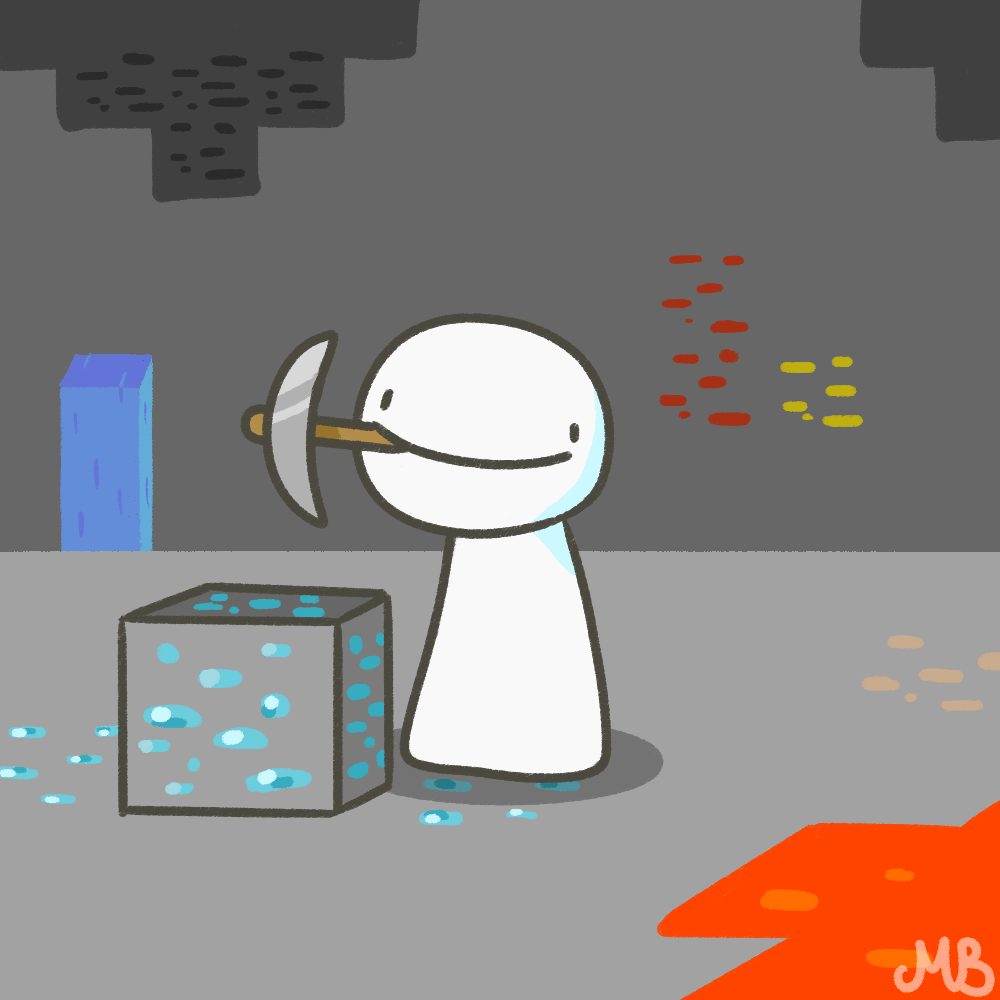

Minecraft Manhunt: Speedrunner
Minecraft Manhunt: Speedrunner
| Difficulty | Massive Luck Required |
| Rating | |
| Type | Challenge |
Objective
Kill the Ender Dragon.
Or die trying.
Rules
All's fair in love and war.
Just don't cheat.
Good luck; go forth and conquer!
"Come here, George!!"
Hello, hello, this is part 2 of the guide on Minecraft Manhunt, for those people who want to look cool and act as a Speedrunner. (Though honestly, Dream is in a whole league of his own.)
As per the usual, I will be pulling out all the tricks that were showcased in Dream's Minecraft Manhunt series. I will also offer some possible alternatives to these methods, and because I am a very fair person, disclose which methods can be countered, because I am basically doing that for the Hunter's perspective as well.
Guide for Hunters: Part 1
Things to know
Minecraft Manhunt is a game created by Twitch Streamer and YouTuber Wilbur Soot, which was was later adapted and popularised by Twitch Streamer and YouTuber Dream, where he tries to defeat the Ender Dragon while a group of Hunters try to stop him. These Hunters are, in order of appearance, currently:
1st Hunter: GeorgeNotFound 2nd Hunter: Sapnap 3rd Hunter: BadBoyHalo 4th Hunter: Antfrost 5th Hunter: Awesamdude Much of the tricks used will be grouped into different sections, being different points in time throughout the speedrunner's playthrough, where they will have different objectives.
In each section, the best times to attack, and the best methods to attack, will be talked about.
Guide
Plan A: Delay and Power Up
The main idea of this part of the manhunt, is to get equipment that the Hunters are unable to use against you, forcing them to retreat. Even a small power boost such as Stone/Iron Weapons will work.
This forces you to do things that may cause the Hunters some delay, such as Boat Clutches, or using Hay Bales, to jump off a Mountain.
- Being unlucky; the starting point is always the hardest
Plan B: Under The Sea
Remember how, in all the Minecraft Manhunt videos, whenever Dream is in danger of dying, all the animals rush to his aid, like a Disney Princess in need?
Well, if you pass an Ocean, you can jump in and swim; swim speed is difficult to change, and you get some time to think, as Hunger depletes very slowly; its almost negligible.
Except for one: Dolphins give the Dolphin's Grace Buff, which lets you swim faster. If you are the first person in the water, all the Dolphins should be attracted to you, allowing you to leave the Hunters behind.
However, if there is a lack of Dolphins in the vicinity, the Hunters may be able to craft Boats to eventually catch up; if you realise they are doing this, get to the land as soon as possible, upgrade in whatever way you can in those few seconds, and repeat.
Preferably, you can craft more Boats.
- No Dolphins
Plan C: Breaking and Entering
If you pass a Village or Ruined Portal that is easy to loot (as opposed to Jungle and Desert Temples), it might be a good idea to get as much as you can; the Hunters may be distracted and split up to prevent you from getting much, which might let you pick them off.
Think of it like this: If you don't try to get anything, they will get something anyways.
If it's a Village you pass, you will want to get Hay Bales for Bread and Fall Damage Prevention, or to a Blacksmith for some Iron Gear. Break the windows to get items as opposed to going in; you will be easily cornered.
- Persistent Hunters, in which case you just have to keep going
Plan D: The Ravine
Alternatively, there are a lot of ways to incapacitate the Hunters to such a degree that they are forced to back off. A naturally generated ravine on the surface is a prime example.
If you do not have blocks, you could try to push the Hunters into the ravine.
If you do have blocks however, possibly using one of the earlier methods, you could block the Hunters as they attempt to jump across the ravine after you, causing them to plummet to their deaths.
Alternatively, if you jump into water at the bottom, the Hunters are likely to come after you. Placing blocks above the water surface after they jump can cause them to possibly take fatal fall damage.
- Going Around
- Staying a Distance
- Bows
- Boat Clutch, MLG Water Bucket, Hay Bales
Plan A: Wall Mining
If you hear mining, or see the Hunter's name tags, mine up all your Furnaces and Crafting Table. Ensure you crafted a bucket; you will need it for the Nether Portal.
If the Hunters have not spotted you yet, it would be a good idea to mine into the walls to escape.
Alternatively, you can attack them from above, possibly with Lava, if you don't mind revealing you have noticed them.
- Surface Ambush
Plan B: Underground Portal
If there is underground lava nearby, it is a good idea to create a Nether Portal underground. This is a good way to avoid being ambushed on the surface.
However, this will give you the 'Hot Stuff' Advancement, which can alert the Hunters that you are going to the Nether, and they might come after you.
Getting out of the Nether alive later on may become a concern. Spawning a Portal underground might mean having to dig out, or to navigate many tunnels when getting out, especially if the Hunters try to go after you.
Thus, this should be a plan that should be carried out only when you are sure the Hunters aren't around to get you.
- Getting Cornered
- Terrain Difficulties
Plan A: Literal Tower Defence
If and when the Hunters catch up to you in the Nether, you are more likely to get cornered at the edge of a Lava Lake, than to be directly taken out by the Hunters. They are counting on that happening, actually.
You can decide on either of the following options while the Hunters try to get to you:
Wall Mining:
Retreat into the ceiling, and let the Hunters attempt to find you, only to be met with a Lava Pool at the top, placed down by you. It's not like they can block it off; they need to get to the surface! That should stop them for a while!Fisherman's Friend:
As the Hunters try to tower up to you, you can use a Fishing Rod to, quite literally, shoot them into the air, and most likely, fall all the way back, taking massive fall damage without water and dying.- Bedrock Ceiling
- Hay Bales, Boat Clutch
- Potion of Invisibility
Plan B: Fire Resistance
Alternatively, if you have Fire Resistance, you can jump into the Lava Lake, and the Hunters will not be able to do anything about it, unless they were to also have Fire Resistance.
However, since swimming in Lava is extremely slow, it might be a good idea to dig into the bottom of the Lava Lake, and to cross territory that way.
Note: If the Hunters are at the lake's surface level, and not at the edge of a ravine, they will be able to dig and chase after you.
It may also be an issue to get to the surface if you no longer have an idea of whether you are still under a Lava lake, and the Fire Resistance wears off; always make more than 1!
Another good idea is to find and get on a Strider and get away.
- Slow Speed unless Underground
- Also Fire Resistance
- Also Striders
- Potion of Invisibility
Plan C: Soul Speed
When trading with Piglins, there is a ~1.74% chance to get Iron Soul Speed Boots, and a ~1.09% chance to get the Enchantment Book. If you do get it, it is a great method of getting away from the Hunters while crossing the Soul Sand biomes (those boots be zooming).
They will also get you away from the Hunters fast. However, this may not be ideal for when in a Nether Fortress, as you there's a distinct lack of Soul Sand there.
- Also Soul Speed Boots
- Nether Fortress Location
- Potion of Invisibility
Plan D: Explosives
If you want, however, you can prepare a trap for the Hunters, so that they die and lose all their gear.
If you passed by a Desert Temple, you can take the TNT at the bottom of the chamber. If you pass by a Village or Sheep, you can get or craft Beds.
Cover the Nether Portal Entrance with blocks, leaving a hole at the bottom where you place the bed. When the Hunters enter, click on the bed to blow them up by "Intentional Game Design". Make sure to hide behind a block when you do!
Alternatively, replace the top layer of the walls with TNT, and wait some height above with a Minecart with TNT, on a Minecart Rail.
When the Hunters spawn in, break the block the Minecart is on, which will detonate instantly upon impact, setting off the rest of the TNT.
Kabloom!
- New Nether Portal
Plan A: Potion of Invisibility
If the Hunters fortified the Portal, chances are they are planning on you charging in and giving yourself up.
Which is very dumb; which person would do that? Using a Potion of Invisibility, you can sneak into the room with the Portal, and get back to the Overworld.
Unfortunately, they will eventually figure out you left, as the Compass pointing to you will no longer work.
- Covering the Portal
- Disabling the Portal
- Trapping the Other Side
- Obsidian Cage
Plan B: New Nether Portal
Smarter Hunters might surround the actual Portal with blocks as well, or diable the Portal, and not leave an entrance directly to it *cough cough*
Therefore, the safest plan is to build a new Nether Portal in a location far away, as that solves the issue of the Hunters trapping the Portal
- Long Preparation Time
Plan C: Wall Mining Again
There are also Hunters who will trap the other side of the Portal, in the Overworld. One example is surrounding the Portal in Lava or TNT, and pushing the Speedrunner in when they appear.
Therefore, it is important to have a Water Bucket on hand, and to be able to mine into the walls as soon as possible. Block yourself off in a corridor, and start mining into the wall, until you reach the surface.
- Surface Ambush
- Obsidian Cage
Plan D: Pushing in TNT (via Piston)
That might still be a risk if you do not want to face the Hunters head on. As such, you can push in an ignited TNT block using a piston, and proceed to blow them up.
However, in the event that does not work, the Hunters might try to rush you down, knowing you are there. The best counter to this is to enter the Portal 1 second after pushing TNT in; both processes take 4 seconds. Take them out while they are disoriented and confused, and go about the rest of your day.
Of course, this is assuming the Hunters are on the other side; otherwise, you may be wasting precious time and resources.
- Nether Ambush
- Obsidian Cage
Plan A: The Ravine
Did I mention how jumping into a ravine and covering the water, or pushing the Hunters in, would take out the Hunters?
Well, it's not as effective any more, as they probably have Water Buckets, but it would at least slow them down.
- Going Around
- Staying a Distance
- Bows
- Boat Clutch, MLG Water Bucket, Hay Bales
Plan B: Explosives
After the Nether escapade, it is possible to craft stronger explosives, in the form of End Crystals. Before activating the End Portal, you can prepare another trap for them, assuming they were previously taken out, and wait for them to come to you.
If using TNT in Minecarts, spleef them as you past.
If using TNT, conceal it underground to be ignited by Tripwire Hooks as the Hunters past.
If using End Crystals, hide in a corridor and shoot with a Bow as the Hunters run past.
- Long Preparation Time
- Friendly Fire
- Being Ambushed
Plan C: Potions of Invisibility and Strength
This is best used if the Hunters are still alive, and you want to get away from them. Invisibility Potions can help evade capture, even with help from the Compass.
Potions of Strength II increase attack damage by 6, which allows one to easily take out more than 1 Hunter; the Hunters will be more wary.
While Potions of Harming and Poison are also useful, the main goal is to get to the Stronghold, and subsequently the End Portal, alive. While the two do more damage, they might also hurt the user.
The Hunters can take this risk, however, as they have more numbers, and are able to retreat and die; if the Speedrunner dies, it's over.
Plan D: Wall Mining
When the Eyes of Ender begin to arc downwards, you will need to dig underground in search of the Stronghold. If the Hunters, for some reason, are still onto you, this is what you will need to do, while navigating the Stronghold's rooms, at least until the Hunters discover your objective in coming: The End Portal.
Plan A: Potion of Invisibility
Quite likely, the Hunters will barricade the End Portal Room to prevent you from entering. That also includes closing up all the entrances.
Admittedly, that makes Invisibility Potions a lot less effective, as you would need to break blocks to enter the room.
However, if the room you enter from had very little lighting, the Hunters will be unable to see the particle effect, and when they hear you and go investigate, you can enter and activate the Portal.
Better yet, instead of mining in, light some explosives to possibly cause a commotion to get all the Hunters to leave the room.
- Spectral Arrows
- Underground Ambush; Prevents Preparations
Plan B: Under the Portal
The End Portal Room is always off a specific dimension, with the End Portal in a specific spot.
That means, if digging underneath the Portal, it is possible to activate the Portal from below.
However, the Hunters could easily hear the sound and realise where the Speedrunner is.
A good idea would be to reveal yourself to be digging from the other side of the room, and when detected, block back up and continue mining below. The Hunters are likely to be distracted and unlikely to check the compass to see where you are.
- Explosives
- Underground Ambush; Prevents Preparations
Plan C: Firework Rockets
Did you know that it is possible to fire Firework Rockets using Crossbows? For every extra Firework Star, an extra 1-2 damage can be dealt, to a maximum of 18 damage.
With a full hotbar of Crossbows, it is possible to take out all the Hunters though beating them by pure DPS.
Assuming the Hunters do not have Beds nearby, they will be very incapacitated, without any gear.
- Close Bed Spawnpoint
Plan D: TNT Drop
This is for if the Hunters decided to go to the End to set up a trap for you beforehand.
TNT, when lit, becomes an entity, meaning that dropping TNT into the End Portal can blow up whatever is on the other side, as the Portal will teleport it like it would with any other entity.
Note: If you feel like a challenge, you can summon a Wither, and push it into the Portal via Piston. While the explosion and attacks of the Wither are more than likely to destroy all the Hunters, you may have to face it afterwards; Withers are very impartial.
- AFK Lava Ceiling Trap
Plan A: Tower Snipe
By climbing up an Obsidian Tower, you can shoot down all the other End Crystals without having to get back down and repeat. Just make sure to bounce whenever a Hunter gets close to the top and have blocks around them to prevent getting shot off, using Ender Pearls.
However, this does not work on the Towers with Iron Bars over them; as such, it is a good idea to take those out first, and to climb the last one. Shooting at an angle destroys the End Crystal and destroys the Iron Bars, giving access to the top.
- Magic Healing Crystals
- Literal Tower Defence
- Dragon Necromancy
Plan C: Outer End Islands
It is possible to reach the Outer End Islands, without use of the End Gateways that spawn after defeating the Ender Dragon. Due to players generally only accessing the area after beating the game, it contains a large amount of Overpowered Armour and Weapons, as well as the Elytra.
This makes it a good thing to get, if you are willing to sit around for hours on a Redstone Flying Machine.
However, the Hunters may have made preparations for that, and may attempt to follow you, shooting arrows at you while on the way to make you fall into the Void.
Thus, when doing so, always have Ender Pearls; you can teleport back to the Main Island. If the Hunter does not happen to have any, they will be stuck, and can only return by falling into the Void, and losing all their items and equipment.
If you have the materials to, you can then proceed in the opposite direction.
Upon getting the items, with the help of Firework Rockets (hopefully you got some), you can travel back and destroy the End Crystals while in the air, before swooping down every now and then to take out the Ender Dragon.
- Literal Tower Defence
- Bed Kamikaze
- Dragon Necromancy
Plan D: An Even "Bedder" Plan
Similar to digging underneath the End Portal, you can tunnel underneath the Dragon's Perch, and bombard it with Beds before the Hunters realise.
This works well in conjuction with Wall Mining, and if you are lucky and have sufficient beds, it is possible to take out the Dragon without taking out any of the End Crystals.
Alternatively, you can fake your death by falling into the Void, throwing Ender Pearls to the bottom of the End Islands, and make your way to the center from there, after taking out all the End Crystals.
- Friendly Fire
- Magic Healing Crystals Explosion
- Literal Tower Defence
- Bed Kamikaze
Starting Out
Hunter Objective: Beat you to death
Can be countered by:
Can be countered by:
Can be countered by:
Can be countered by:
Now that you have, for the time being at least, shaken the Hunters off your tail, they are going to gear up, knowing that you will too. Prepare well, but don't dally. If they get to you before you are done, you may not escape.
To the Nether!
Hunter Objective: Gear up to your level, then come after you
Can be countered by:
Can be countered by:
Well, you are in the Nether now. This is the bit where you are more likely to get yourself killed, than for the hunters to kill you. You better have Fire Resistance!
On the hunt for a Nether Fortress
Hunter Objective: Burn you in a lava lake
Can be countered by:
Can be countered by:
Can be countered by:
Can be countered by:
Well, now that you successfully dispatched all the Hunters and acquired the 'Into Fire' and 'Oh Shiny' advancements, the Hunters know you are returning to the Nether Portal. If they aren't already chasing you, they are more than likely to have booby-trapped the Portal.
Return to the Overworld
Hunter Objective: Protect the Nether Portal
Can be countered by:
Can be countered by:
Can be countered by:
Can be countered by:
Well, you successfully escaped the Nether. Give yourself a pat on the back, the hardest part is over! Now it's time for the Stronghold. With new items collected in the Nether, you have a few more tricks up your sleeve to cripple the Hunters.
The Hunt for the Stronghold
Hunter Objective: Prevent you from getting to the Stronghold
Can be countered by:
Can be countered by:
Can be countered by:
Now that you reached the Stronghold, it's that time of the day once more: Portal Combat! Seriously, what's with all the Hunters defending Portals?
Activate the End Portal
Hunter Objective: Defend the End Portal
Can be countered by:
Can be countered by:
Can be countered by:
Can be countered by:
So, it seems you successfully made it to the End, a remarkable feat indeed. You are the first in a long long time. Go forth and conquer till the end!
In other words, don't let me down now.
Defeat the Dragon in the End
Hunter Objective: Throw you into the Void, or kill you before you kill the Dragon
Can be countered by:
Can be countered by:
Can be countered by:
Variations
Speedrunner vs Assassin: Speedrunner (Starting to Suffer)
Speedrunner Objective: Kill the Ender Dragon
In this gamemode, the Assassin(s) can take out the Speedrunner in 1 hit, but the Assasin(s) cannot move while the Speedrunner looks at them.
That means the Speedrunner will need to be cautious, and to try to stay in open areas they can't get easily stuck in.
Tip: If the Assassin is in water, looking at them will cause them to stop swimming, and eventally drown to death. Remember! The water is your best friend!
Minecraft Mansave: Noob (Could be Worse)
Noob Objective: Get themselves killed
In this gamemode, a Noob will try to get themselves killed in a set amount of time, optionally using a specific method, while the Saviour(s) will need to prevent them from doing so.
If choosing a specific way to die, it may be a good idea to make it not as obvious what the method is.
For example, instead of waiting for nighttime, one can go underground to get blown up by a Creeper; the Saviours might mistake you for trying to burn yourself in lava.
Minecraft Manhunt: Wither Edition (Massive Luck Required)
In this gamemode, the Speedrunner will try to defeat the Wither instead of the Ender Dragon, while the Hunters try to hunt them down.
This may be more time-consuming, given the rarity of Wither Skeleton Skulls. The Speedrunner will have to be more patient and survive for a lot longer in the Nether.
The Wither will also actively attempt to target players (usually impartially), as opposed to the Ender Dragon who... just flies around? Either way, the fight will be a lot harder without proper gear, unless underground.
Gallery
Disclaimer: Only the latest version of Minecraft Manhunt will be shown, to prevent the Gallery from being clogged up. You know where to find his videos, anyways.


 Dream's latest Manhunt, with 5 Hunters
Dream's latest Manhunt, with 5 Hunters


Previous | Index | Next |